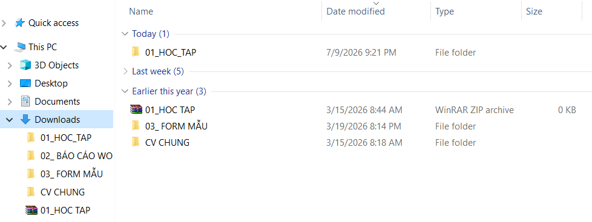

Thao tác cơ bản với tệp tin và thư mục trên hệ điều hành Windows
Thực hành thành thạo các thao tác cơ bản trong quản lý hệ thống tệp tin và thư mục (tạo mới, đổi tên, sao chép, di chuyển, xóa vĩnh viễn, khôi phục từ thùng rác). Từ đó xây dựng cấu trúc lưu trữ tối ưu và quy tắc đặt tên tệp khoa học phục vụ cho việc quản lý học tập tại UEB.
Quá trình thực hành được thực hiện trên hệ điều hành Windows 11 thông qua File Explorer với các bước tuần tự như sau:
Windows + E để khởi chạy
nhanh trình quản lý tệp tin của hệ thống.D: (hoặc thư mục
Documents nếu hệ thống chỉ có một ổ đĩa duy nhất) để tạo không gian làm việc.
New -> Folder và đặt tên thư mục gốc là ThucHanh_Le Thi Ngoc Anh (MSSV:
25051097).
ThucHanh_Le Thi Ngoc Anh
vừa tạo.New -> Text Document và đặt
tên tệp là GhiChu.txt.GhiChu.txt, chọn biểu tượng
Rename (hoặc phím F2) và đổi tên thành GhiChuQuanTrong.txt.
TaiLieu.GhiChuQuanTrong.txt chọn Copy (Ctrl + C), mở thư mục
TaiLieu ra, nhấp chuột phải chọn Paste (Ctrl + V) để tạo bản sao.
DiChuyen.txt. Nhấp chuột phải chọn Cut (Ctrl + X), mở thư mục
TaiLieu và chọn Paste (Ctrl + V). Tệp gốc sẽ biến mất ở thư mục ngoài
và chuyển vào trong thư mục con TaiLieu.
TaiLieu, nhấp chuột phải vào
tệp GhiChuQuanTrong.txt chọn Delete. Tệp này sẽ bị đưa vào Thùng rác
(Recycle Bin) của hệ thống.DiChuyen.txt trong thư
mục TaiLieu, nhấn giữ tổ hợp phím Shift + Delete, chọn
Yes trên hộp thoại xác nhận để xóa vĩnh viễn tệp khỏi ổ cứng mà không qua Thùng
rác.
GhiChuQuanTrong.txt vừa xóa, nhấp chuột phải chọn Restore để khôi
phục tệp về vị trí thư mục gốc ban đầu.Nhằm mục đích quản lý khoa học toàn bộ tài liệu học tập trong học kỳ này, tôi đã xây dựng cấu trúc phân cấp chuẩn hóa như sau:
Quy tắc đặt tên tệp khoa học giúp tìm kiếm tệp nhanh chóng và quản lý các phiên bản tài liệu một cách chuyên nghiệp:
| Quy tắc | Ví dụ | Giải thích |
|---|---|---|
| Tiền tố số thứ tự | 01_BaoCao_Final.docx | Sắp xếp tự động các bài tập theo thứ tự thời gian học tập. |
| CamelCase / snake_case | BT1_CauTrucThuMuc.pdf | Dễ đọc, không dùng dấu tiếng Việt và dấu cách để tránh lỗi font hệ thống. |
| Ngày tháng (ISO 8601) | 2026-01-15_GhiChu.md | Định dạng YYYY-MM-DD giúp tệp tin tự sắp xếp theo trình tự ngày. |
| Hậu tố phiên bản | BaoCao_v2_final.pdf | Kiểm soát lịch sử cập nhật khi chưa sử dụng hệ thống Git. |

Minh chứng thực hành quản lý tệp trên máy tính
Hình ảnh thực tế cấu trúc
thư mục UEB được tổ chức ngăn nắp trên máy tính cá nhân.
Quản lý tệp tin là kỹ năng số nền tảng nhất của mọi kỹ sư công nghệ. Việc thiết lập cấu trúc thư mục logic cùng quy tắc đặt tên nhất quán ngay từ đầu học kỳ giúp tôi tiết kiệm tới 40% thời gian tìm kiếm tài liệu học tập, tránh thất lạc mã nguồn và làm việc nhóm hiệu quả hơn rất nhiều.